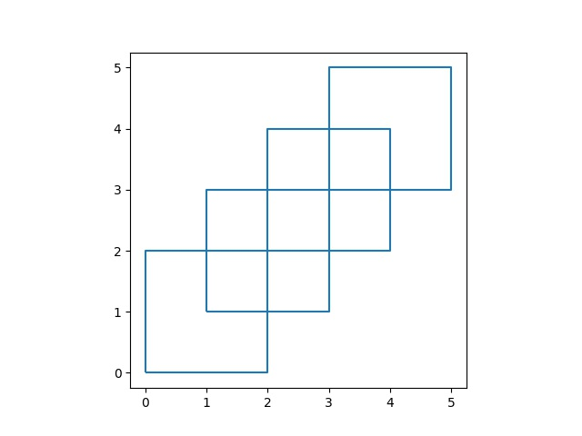
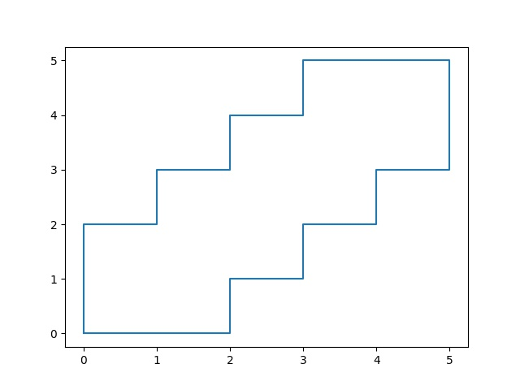

Poligon Birleşimi, Çevreleyen Bölge
Poligon Birleşimi
Bir harita uygulaması için bir poligon grubunun dış çeperini bulmak
gerekti. Poligonların kesiştiği bölgeler var, bu bölgeleri dikkate almadan
tüm poligonların birleşiminin dış sınırını nasıl buluruz? Yardımcı olacak
kütüphaneler shapely ve geopandas.
from matplotlib import pyplot as plt
import geopandas as gpd
from shapely.geometry import Polygon
import pandas as pd
import numpy as np
poly1 = Polygon([(0,0), (2,0), (2,2), (0,2)])
poly2 = Polygon([(2,2), (4,2), (4,4), (2,4)])
poly3 = Polygon([(1,1), (3,1), (3,3), (1,3)])
poly4 = Polygon([(3,3), (5,3), (5,5), (3,5)])
polys = [poly1, poly2, poly3, poly4]
gpd.GeoSeries(polys).boundary.plot()
plt.savefig('nokta3.jpg')

Birleştirmek için unary_union çağrısı yapılır,
from shapely.ops import unary_union
mergedPolys = unary_union(polys)
res = gpd.GeoSeries([mergedPolys])
for x in res.items():
rrr = np.array(x[1].exterior.coords)
plt.plot(rrr[:,0].T,rrr[:,1].T)
plt.savefig('nokta2.jpg')

Not: Çağrıdan geriye tek bir birleşmiş Polygon geliyor. Fakat eğer çağrıdan geriye bir liste gelirse her liste içindeki Polygon objelerine ayrı ayrı bakılabilir, uygun olanı seçilir.
Alfa Şekilleri (Alpha Shapes)
Bu yaklaşım altta birazdan Delanuay üzerinden tarif edilecek yöntemin
literatürdeki yaygın kullanılan bir versiyonu, yaklaşımı kodlayan bir
paket alphashapes,
import pandas as pd
import alphashape
pts=np.array(pd.read_csv("cres.csv"))
plt.plot(pts[:,0],pts[:,1],'r.')
poly = alphashape.alphashape(pts, 0.3)
c = np.array(poly.exterior.coords)
plt.plot(c[:,0].T,c[:,1].T)
plt.savefig('nokta4.jpg')
{kind=link}
Parametre alpha, üstte 0.3 verildi, çevreleyen çizginin ne kadar
detaylı olacağını tanımlıyor. Dikkat, alfa şekilleri her zaman her dış
noktayı sınıra dahil etmeyebilir. Verilen parametre ile bazı noktaları
atlamayı seçebilir bu sebeple eğer eldeki tüm noktalardan emin isek,
gürültü yoksa ya başka bir yöntem ya da ona göre bir parametre seçmek
lazım.
Üçgenleme, Delanuay (Triangulation)
Delanuay tekniği bir nokta bulutunu veri alarak o noktaları birbiri ile bağlantılı üçgenler haline çevirmek için kullanışlıdır; bu tür noktalar hesapsal bilimde ortaya çıkabilir, diferansiyel denklem çözmek için sayısal hesaplara gereken ızgaralar Delanuay ile yaratılabilir. Noktalar verilir, üçgen bazlı ızgara ortaya çıkartılır, bu ızgara hücreleri baz alınarak hesabın gerisi işletilir.
Kütüphane scipy içinde Delanuay hesabı yapabilen kodlar var.
from scipy.spatial import Delaunay
points = [[101, 237], [198, 207], [316, 214], [ 58, 179], [162, 138],
[217, 120], [310, 116], [153, 87], [257, 43]]
points = np.array(points)
tri = Delaunay(points,furthest_site=False)
plt.triplot(points[:,0], points[:,1], tri.simplices)
plt.savefig('algs_075_enc_12.png')
{kind=link}
Kodda tr.simplicies içinde görülen üçgenler kodlanmış, her kenar
points` içindeki bir indisi değerine, bir noktaya işaret ediyor.
print (tri.simplices)
[[4 0 3]
[7 4 3]
[5 7 8]
[7 5 4]
[5 6 2]
[6 5 8]
[1 5 2]
[5 1 4]
[0 1 2]
[1 0 4]]
Temel olarak Delaunay ile yapılan ızgaraları oluşturan üçgenlerin açılarını minimum tutmak, içiçe üçgen oluşturmamak ve yakın noktaların birbiri ile bağlantılı olmasına uğraşmak [2]. Algoritma bu şartların sonucu olarak görülen ızgaraya doğru evrilir.
Fakat bazı ilerlemeler hala mümkün; mesela bir insana sadece ham noktalar verilse ve hangi şekilden geldiğini söylemesi istense, büyük ihtimalle en üstteki kenarı oraya koymayacaktı. O kenar Delaunay'ın dışbükeylige meyili sebebiyle ortaya çıkıyor. O zaman biz de bir ek işlem yaparak o kenarı çıkartabiliriz. Görülen ek kenar aşırı büyük açısı olan bir üçgenin kenarı (Delanuay açıları az tutmaya uğraşmasına rağmen), bir artişlem (postprocessing) adımı içinde ``içinde çok büyük açı taşıyan'' üçgenleri çıkartabiliriz.
newsimp = []
for t in tri.simplices:
# ucgen kenar noktalari
A,B,C = points[t[0]],points[t[1]],points[t[2]]
# A-B ve A-C vektorunu hesapla, aradaki aciyi kosinus uzaklik uzerinden bul
e1 = B-A; e2 = C-A
num = np.dot(e1, e2)
denom = np.linalg.norm(e1) * np.linalg.norm(e2)
d1 = np.rad2deg(np.arccos(num/denom))
# B-C ve B-A ayni sekilde
e1 = C-B; e2 = A-B
num = np.dot(e1, e2)
denom = np.linalg.norm(e1) * np.linalg.norm(e2)
d2 = np.rad2deg(np.arccos(num/denom))
# ucuncu aciyi vektorle hesaplamaya gerek yok, toplami 180'den cikart
d3 = 180-d1-d2
degs = np.array([d1,d2,d3])
# ucgenin herhangi bir acisi 110 dan buyukse o ucgeni atla
if np.any(degs > 110): continue
newsimp.append(t)
plt.triplot(points[:,0], points[:,1], newsimp)
plt.savefig('algs_075_enc_13.png')
{kind=link}
Farklı bir şekle bakalım,
import pandas as pd
points = np.array(pd.read_csv('cres.csv',header=None))
plt.plot(points[:,0],points[:,1],'.')
plt.savefig('algs_075_enc_14.png')
{kind=link}
Bu nokta bulutu üzerinde Delanuay uygularsak,
tri = Delaunay(points,furthest_site=False)
plt.triplot(points[:,0], points[:,1], tri.simplices)
plt.savefig('algs_075_enc_15.png')
{kind=link}
Bu veride büyük açılı üçgenleri çıkartsak bile hala geriye iç kısımdaki bazı çok uzun çizgiler kalacak. Eğer aşırı uzun bağlantıları, çizgileri çıkartırsak belki istenilen objeye yaklaşabiliriz. ``Çok uzun'' tanımını izafi olarak tanımlamak lazım tabii ki, kod içine kafamıza göre gelişigüzel seçtiğimiz bir takım sihirli sabit sayılar koymak istemiyoruz, filtreyi şöyle tanımlayalım, eğer bir çizgi diğer tüm bağlantıların ortalamasından bir sapmadan fazla uzaktaysa o çizgiyi içeren üçgen çok büyük olarak kabul edilir ve çıkartılır. Büyük açı mantığını hala tutuyoruz.
tri = Delaunay(points,furthest_site=False)
res = []
for t in tri.simplices:
A,B,C = points[t[0]],points[t[1]],points[t[2]]
e1 = B-A; e2 = C-A
num = np.dot(e1, e2)
n1 = np.linalg.norm(e1); n2 = np.linalg.norm(e2)
denom = n1 * n2
d1 = np.rad2deg(np.arccos(num/denom))
e1 = C-B; e2 = A-B
num = np.dot(e1, e2)
denom = np.linalg.norm(e1) * np.linalg.norm(e2)
d2 = np.rad2deg(np.arccos(num/denom))
d3 = 180-d1-d2
res.append([n1,n2,d1,d2,d3])
res = np.array(res)
m = res[:,[0,1]].mean()*res[:,[0,1]].std()
mask = np.any(res[:,[2,3,4]] > 110) & (res[:,0] < m) & (res[:,1] < m )
plt.triplot(points[:,0], points[:,1], tri.simplices[mask])
plt.savefig('algs_075_enc_16.png')
{kind=link}
Bu güzel bir şekil oldu.
Dışbükey Zarf (Convex Hull)
Verili herhangi bir boyuttaki bir nokta bulutunu düşünelim. Bu noktalar mesela bir yapay görüş uygulamasında bir görüntüsel bölgeyi (blob) temsil ediyor olabilir, ki gerçek dünyada o bölge bir obje olabilir. Ya da uzaklık ölçümü yapan algılayıcıdan kordinatlar aldık, bu kordinatlar arasındaki bir grubun etrafını tanımlayan sınırları bilmek istiyoruz. Bu bölgenin özellikle dışbükey olmasını istiyoruz.
Dışbükeylik özellikle istenen bir özellik, çünkü gerçek dünya objelerinin kabaca dış çeperleri dışbükey olmaya meyillidir. Ya da veri içinde dıştan izole, dışa kapalı bölgeler dışbükey gözükebilir. Bu bölgeleri bulmak ve dış hatlarını raporlamak faydalı.
Şöyle bir nokta bulutu olsun,
from scipy.spatial import ConvexHull
import pandas as pd
points = np.array(pd.read_csv('quadri.csv'))
plt.plot(points[:,0], points[:,1], 'o')
plt.xlim(6,12); plt.ylim(8,15)
plt.savefig('enc_09.png')
{kind=link}
Bu noktaların dışbükey zarfını (convex hull) bulmak için pek çok algoritma
var. Mesela Quickhull [3], ya da Graham Scan adlı algoritmalar. Altta
scipy ın çağrısını kullanıyoruz, bu çağrı içinde [4] koduna çağrı
yapıyor, QHull Quickhull kullanıyor.
from scipy.spatial import ConvexHull
import pandas as pd
points = np.array(pd.read_csv('quadri.csv'))
hull = ConvexHull(points)
plt.plot(points[:,0], points[:,1], 'o')
for simplex in hull.simplices:
plt.plot(points[simplex, 0], points[simplex, 1], 'k-')
plt.xlim(6,12); plt.ylim(8,15)
plt.savefig('enc_01.png')
{kind=link}
3 boyutlu bir veri için,
from scipy.spatial import ConvexHull
from mpl_toolkits.mplot3d import Axes3D
np.random.seed(2)
fig = plt.figure()
ax = fig.add_subplot(111, projection='3d')
points3 = np.random.rand(20,3)
hull = ConvexHull(points3)
edges= list(zip(*points3))
for i in hull.simplices:
plt.plot(points3[i,0], points3[i,1], points3[i,2], 'r-')
ax.plot(edges[0],edges[1],edges[2],'bo')
ax.set_xlabel('x')
ax.set_ylabel('y')
ax.set_zlabel('z')
plt.savefig('enc_08.png')
{kind=link}
Sonuçlar üstte. Piyasadaki en iyi dışbükey zarf algoritmalarının algoritmik karmaşıklığı $O(n \log n)$ olarak biliniyor. Bu bazı uygulamalar için yavaş gelebilir, ayrıca çoğu uygulamanın kesin bir dış çeper bilgisine ihtiyacı yoktur, yaklaşık bir çeper, kabaca şeklin ne olduğunu bildiren bir algoritma da kabul edilir olabilir.
Kaynaklar
[1] https://www.matecdev.com/posts/shapely-merge-polygons.html
[2] https://en.wikipedia.org/wiki/Delaunay_triangulation
[3] Barber, {\em The Quickhull Algorithm for Convex Hulls}
[4] The Geometry Center Home Page, {\em QHull}, \url{http://www.qhull.org}
Yukarı